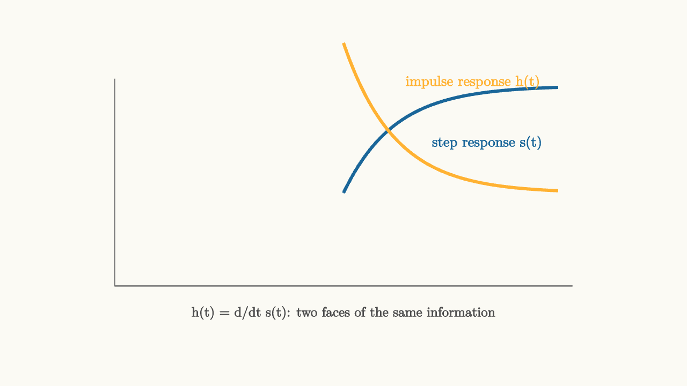

Impulse Response Is A Circuit Fingerprint
Imagine you are given an unknown circuit sealed in a black box. One input wire, one output wire, no other information. Your task: fully characterize the circuit without opening the box.
What experiment would you run?
You could apply a slow sine wave and measure how much it gets amplified. You could apply a fast sine wave. You could sweep through frequencies one by one. That would take a long time, and you would only know the circuit's response at the specific frequencies you tested.
Or you could do something much more efficient. You could apply a brief, sharp spike of voltage and then listen to everything the circuit does afterward.
That single experiment, done once, reveals everything about an LTI circuit. The circuit's response to a sharp spike is called the impulse response, written $h(t)$. And it is a complete fingerprint. Once you know $h(t)$, you can predict the circuit's output for any input, not just the ones you tested.
That is a remarkable claim. Let us understand exactly why it is true.
The Dirac Delta: A Spike with Unit Area
The "sharp spike" we want to apply needs a precise mathematical definition. The intuition is: an infinitely tall, infinitely thin pulse that has exactly one unit of area.
We call this the Dirac delta function, written $\delta(t)$.
You cannot plot $\delta(t)$ in the usual sense. At $t = 0$ it is infinite. Everywhere else it is zero. But its defining property is:
This sounds paradoxical, but it is perfectly well-defined as a limit. Start with a rectangular pulse of width $\epsilon$ and height $1/\epsilon$, so its area is exactly one. Now take $\epsilon \to 0$. The pulse gets taller and thinner while preserving its area. In the limit, you have the delta function.
source
background = [0.985, 0.98, 0.955, 1]
camera = Camera(4.8b)
"wide pulse area = 1"
mesh axes = block {
. stroke{GRAY, 1.5} Line(start: [-3.2, -1.2, 0], end: [3.2, -1.2, 0])
. stroke{GRAY, 1.5} Line(start: [-3.2, -1.2, 0], end: [-3.2, 1.8, 0])
. center{[3.0, -1.45, 0]} color{GRAY} Text("t", 0.68)
}
mesh pulse = block {
. fill{alpha{0.25} BLUE} stroke{BLUE, 2.5} center{[0, -0.45, 0]} Rect([1.2, 1.5])
}
mesh alabel = color{BLUE} center{[0, 0.55, 0]} Text("area = 1", 0.72)
mesh wlabel = color{DARK_GRAY} center{[0, -1.65, 0]} Text("width 1.2, height 0.83", 0.68)
play Write(0.9)
play Fade(0.5)
"narrower, taller"
pulse = block {
. fill{alpha{0.25} ORANGE} stroke{ORANGE, 2.5} center{[0, -0.05, 0]} Rect([0.5, 2.3])
}
alabel = color{ORANGE} center{[0.55, 1.15, 0]} Text("area = 1", 0.72)
wlabel = color{DARK_GRAY} center{[0, -1.65, 0]} Text("width 0.5, height 2.0 ... area still 1", 0.68)
play Trans(0.8)
"delta function limit"
pulse = block {
. stroke{GREEN, 4} Line(start: [0, -1.2, 0], end: [0, 1.7, 0])
. stroke{GREEN, 3} Line(start: [-0.12, 1.5, 0], end: [0.12, 1.5, 0])
}
alabel = color{GREEN} center{[0.6, 1.7, 0]} Text("delta(t)", 0.72)
wlabel = color{DARK_GRAY} center{[0, -1.65, 0]} Text("width approaches zero, area stays 1", 0.68)
play Trans(0.8)The delta function has one more crucial property that makes it so useful. For any function $f(t)$:
This is called the sifting property. Multiplying by $\delta(t - \tau)$ and integrating is like pointing a finger at the function at moment $\tau$ and reading off the value. The delta function is a perfect "time pointer."
What Happens When You Poke an RC Circuit
Now apply a delta function to the RC circuit we studied in the previous essay. The governing equation is:
Physically, an impulsive current through a capacitor deposits a finite charge essentially instantaneously. Before $t = 0$ the capacitor has no charge. At $t = 0$ the impulse arrives. After $t = 0$ the input is zero and the circuit evolves freely, driven only by the energy that was suddenly stored.
The impulse deposits charge $q = 1/R$ on the capacitor (working through the circuit equations), creating an initial capacitor voltage $v_C(0^+) = 1/(RC)$. After that moment, the circuit runs freely with no input, and the stored voltage decays through the resistor:
For $t < 0$, $h(t) = 0$ because a causal circuit cannot respond before the input arrives.
source
background = [0.985, 0.98, 0.955, 1]
camera = Camera(4.8b)
"impulse arrives"
mesh axes = block {
. stroke{GRAY, 1.5} Line(start: [-3.2, -1.2, 0], end: [3.2, -1.2, 0])
. stroke{GRAY, 1.5} Line(start: [-3.2, -1.2, 0], end: [-3.2, 1.8, 0])
}
mesh imp = block {
. stroke{BLUE, 4} Line(start: [0, -1.2, 0], end: [0, 1.6, 0])
. stroke{BLUE, 3} Line(start: [-0.14, 1.4, 0], end: [0.14, 1.4, 0])
}
mesh ilabel = color{BLUE} center{[-0.7, 1.65, 0]} Text("delta(t) in", 0.72)
play Write(0.9)
play Fade(0.5)
"circuit responds"
mesh response = stroke{ORANGE, 3.5} ExplicitFunc(|t| 1.55 * exp(-1.4 * t), [0, 3.0, 250])
mesh rlabel = color{ORANGE} center{[1.8, 1.4, 0]} Text("h(t) = (1/RC) exp(-t/RC)", 0.72)
play Write(1.0)
"the fingerprint"
mesh note = color{DARK_GRAY} center{[0, -1.65, 0]} Text("one poke, one complete portrait of the circuit", 0.68)
play Fade(0.7)The exponential decay reveals the circuit's two most fundamental properties at once:
- The initial height $1/(RC)$ tells you the magnitude of the initial kick. For a fixed impulse area, larger $RC$ means lower initial response because the same charge spreads over a larger capacitance.
- The decay rate $1/(RC)$ tells you how quickly the circuit forgets. Smaller $RC$ means faster forgetting. The time constant $\tau = RC$ is the time for the response to fall to $1/e \approx 37\%$ of its peak.
Why This Is a Complete Fingerprint
Here is the key question: why does knowing $h(t)$ tell us the circuit's response to any input, not just the impulse?
The answer comes from the definition of the delta function combined with LTI properties.
Any input signal $x(t)$ can be written as a sum (actually an integral) of scaled, time-shifted delta functions:
This is not an approximation. It is exact. The sifting property guarantees it. The integral simply picks out the value $x(\tau)$ at each moment $\tau$ and places it there via a delta function.
Now apply LTI properties:
- Time invariance: if $\delta(t)$ produces $h(t)$, then $\delta(t - \tau)$ produces $h(t - \tau)$.
- Linearity (scaling): if $\delta(t - \tau)$ produces $h(t - \tau)$, then $x(\tau) \cdot \delta(t - \tau)$ produces $x(\tau) \cdot h(t - \tau)$.
- Linearity (superposition): adding all these contributions gives the total output.
Putting it together:
This is the convolution integral. The output is completely determined by the input and the impulse response. No other information about the circuit is needed. The fingerprint is sufficient.
Different Circuits, Different Fingerprints
The RC exponential decay is just one possible fingerprint. Different circuits produce qualitatively different impulse responses, and reading the shape of $h(t)$ tells you a great deal about the circuit.
source
background = [0.985, 0.98, 0.955, 1]
camera = Camera(4.8b)
"fast RC - short memory"
mesh axes = block {
. stroke{GRAY, 1.5} Line(start: [-3.2, -1.4, 0], end: [3.2, -1.4, 0])
. stroke{GRAY, 1.5} Line(start: [-3.2, -1.4, 0], end: [-3.2, 1.6, 0])
}
mesh h1 = stroke{BLUE, 3.5} ExplicitFunc(|t| 2.8 * exp(-2.8 * t), [0, 3.0, 300])
mesh l1 = color{BLUE} center{[1.5, 1.4, 0]} Text("small RC: fast decay", 0.72)
play Write(0.9)
play Fade(0.5)
"slow RC - long memory"
mesh h2 = stroke{ORANGE, 3.5} ExplicitFunc(|t| 0.8 * exp(-0.4 * t), [0, 3.0, 300])
mesh l2 = color{ORANGE} center{[1.5, 0.75, 0]} Text("large RC: slow decay", 0.72)
play Fade(0.7)
"RLC underdamped"
mesh h3 = stroke{GREEN, 3.5} ExplicitFunc(|t| 1.4 * exp(-0.5 * t) * sin(3.5 * t), [0, 3.0, 300])
mesh l3 = color{GREEN} center{[1.5, -1.65, 0]} Text("underdamped RLC: ringing", 0.72)
play Write(0.9)Reading the fingerprint:
- Fast decay: small time constant, short memory, can respond to rapid changes.
- Slow decay: large time constant, long memory, averages over a long history.
- Oscillatory decay: energy bouncing between capacitor and inductor before the resistor finally dissipates it. This is the signature of an underdamped RLC circuit.
- Non-decaying oscillation: no energy dissipation. This would mean a lossless circuit or an active circuit providing sustaining energy.
- Response that grows: a circuit about to become unstable. The pole of the transfer function has moved into the right half of the complex plane.
The Step Response Is the Integral
One practical wrinkle: a perfect impulse is hard to generate in the lab. You need a very short, very high-voltage pulse. A step function is much easier, just flip a switch.
The good news: the step response and impulse response carry the same information. A step function is the integral of an impulse function, so the step response is the integral of the impulse response:
Going the other direction: the impulse response is the derivative of the step response:
For the RC circuit, the step response $s(t) = 1 - e^{-t/RC}$ differentiates to give $h(t) = \frac{1}{RC} e^{-t/RC}$, consistent with what we found directly.

source
background = [0.985, 0.98, 0.955, 1]
camera = Camera(4.8b)
mesh diagram = block {
. stroke{GRAY, 1.5} Line(start: [-3.2, -1.3, 0], end: [3.2, -1.3, 0])
. stroke{GRAY, 1.5} Line(start: [-3.2, -1.3, 0], end: [-3.2, 1.6, 0])
. stroke{BLUE, 3.5} ExplicitFunc(|t| 1.5 * (1 - exp(-1.4 * t)), [0, 3.0, 280])
. stroke{ORANGE, 3.5} ExplicitFunc(|t| 2.1 * exp(-1.4 * t), [0, 3.0, 280])
. color{BLUE} center{[2.0, 0.7, 0]} Text("step response s(t)", 0.72)
. color{ORANGE} center{[1.8, 1.55, 0]} Text("impulse response h(t)", 0.72)
. color{DARK_GRAY} center{[0, -1.68, 0]} Text("h(t) = d/dt s(t): two faces of the same information", 0.68)
}
"step and impulse"
play Fade(0.8)This equivalence is practically important because it means you can measure $h(t)$ by applying a step, measuring the step response, and then differentiating. The step response is also easier to interpret visually: the final settled value is the DC gain, the slope at $t = 0$ is the initial speed of response, and the shape of the rise tells you about damping and resonance.
The Fingerprint Analogy Is Exact
A human fingerprint identifies a person because it contains specific patterns that are unique to that individual and remain stable over time. The impulse response identifies an LTI circuit in an exactly analogous way:
- Unique: Two different LTI circuits with the same impulse response must behave identically for all inputs. They are, by definition, the same circuit from a signal-processing point of view.
- Complete: From $h(t)$ alone, you can predict the output for any input whatsoever via the convolution integral.
- Stable: For a fixed circuit (fixed component values), $h(t)$ does not change. Time invariance guarantees this.
The impulse response is not just a useful calculation. It is the intrinsic identity of the LTI system.
Why Engineers Care About All This
In practice, measuring the impulse response of a physical system is called system identification. You apply a brief pulse (or more commonly, a carefully designed wideband test signal that approximates one), measure the output, and recover $h(t)$.
Once you have it, you can:
- Predict how the system responds to any future input by computing convolution.
- Design a filter that compensates for undesirable behavior (equalization).
- Check whether the system is stable by looking at whether $h(t)$ eventually decays to zero.
- Design a controller that works together with the system.
A concert hall's acoustic "fingerprint" is its impulse response, measured by firing a starting pistol and recording the resulting reverberation. Recording engineers use these measured impulse responses to add realistic room acoustics to dry studio recordings. The same mathematics that describes an RC circuit describes an orchestra hall, because both are LTI systems at the relevant scales.
The next essay takes the fingerprint idea and runs with it. If every input can be decomposed into scaled, time-shifted impulses, and the circuit responds to each one with a scaled, time-shifted copy of $h(t)$, then the total output is the sum of all those responses. That sum has a name: convolution.